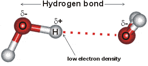

The hydrogen bond in water is a dynamic attraction between neighboring water molecules involving one hydrogen atom located between the two oxygen atoms.
 Hydrogen bond cooperativity
Hydrogen bond cooperativity
 Quantum effects
Quantum effects
 Water hydrogen bond 'wires'
Water hydrogen bond 'wires'
 Rearranging hydrogen bonds
Rearranging hydrogen bonds
 Bifurcated hydrogen bonds
Bifurcated hydrogen bonds
 Information transfer
Information transfer
 Hydrogen bonds and solubility
Hydrogen bonds and solubility
 Introduction to hydrogen bonding in water
Introduction to hydrogen bonding in water
 Water hydrogen bonds
Water hydrogen bonds
 Water hydrogen bond length
Water hydrogen bond length
 Water hydrogen bond direction
Water hydrogen bond direction
 Tetrahedrality
Tetrahedrality
'Every hydrogen atom is thus linked to two oxygen atoms; undoubtedly it is linked more strongly to one of the oxygen atoms than to the other'
W. H. Zachariasen 1935 c
Water, with proteins and nucleic acids, is amongst the most important hydrogen-bonded substances. Hydrogen-bonding forms in liquid water as the hydrogen atoms of one water molecule are attracted towards the oxygen atom of a neighboring water molecule; generally, a proton is shared by two lone electron pairs. In a water molecule (H2O), the oxygen nucleus with +8 charges attracts electrons better than the hydrogen nucleus with its +1 charge. Hence, the oxygen atom is partially negatively charged, and the hydrogen atom is partially positively charged. The hydrogen bond O-H···O may involve a wide range of bonding energies (4 - 120 kJ ˣ mol−1, 0.7 - 20 zJ ˣ molecule−1 ≡ 35 - 1000 cm−1) and O···O contacts (0.238 to 0.300 nm). The hydrogen atoms are not only covalently attached to their oxygen atoms but also attracted towards other nearby oxygen atoms. This attraction is the basis of the 'hydrogen' bonds. Hydrogen bonding causes the collective ground state of liquid water to have an energy lower than the ground state found in single gaseous molecules.
The water hydrogen bond is weak, never stronger than about a twentieth of the strength of the O-H covalent bond. It is strong enough, however, to be mostly maintained during thermal fluctuations at and below ambient temperatures.a The three atoms are not constantly associated as the hydrogen atoms continuously exchange (timescale ~ ms) between neighboring water molecules due to protonation/ deprotonation processes. As the hydrogen bond in water is neither too weak nor too strong, it is sometimes regarded as having “Goldilocks” strength. The importance of this intermediate strength hydrogen bond is examined in depth within the 'Water and Life' page.
H−O−H bending frequency versus averaged
O−H stretch frequency of water, from [4139]
The hydrogen bond strength in water has a very broad distribution due to thermal fluctuations and a disparity between the first and second donor (or acceptor) strengths to individual water molecules. The lifetime of a single hydrogen bond is very short (≈ 0.1 ps at 100 °C; ≈ 1 ps at 0 °C; ≈ 20 ps at -20 °C; dependent on its definition). This is due to the large amplitude librations of the light hydrogen atoms that take them away from where the hydrogen bond attraction is high. Such broken hydrogen bonds will often simply re-form. In liquid water, water molecules are connected within an extended dynamical hydrogen-bonded network, with the individual hydrogen bonds vary between being shorter, straighter and stronger and longer, bent, and weaker. They may even be broken for very brief periods of time (< 100 fs). The vibrational lifetimes of the O-H stretch of H2O and HOD in D20 are 0.23 ps and 0.72 ps, respectively, whereas the vibrational lifetimes of the H-O-H bend of H2O in H2O or D2O are 0.17 - 0.27 ps. Due to its hydrogen bonding, the stretch and bend vibrations of water are related [4139]. The relationship between the stretch and ben vibrations for water (see plot right) is,
ωstr − ωstrg = (ωbendg − ωbend)/0.2583
where ωstrg and ωbendg are the stretch (3706 cm−1) and bend (1590.4 cm−1) frequencies of the gas phase. The water bending mode provides a window into the microscopic structure of both bulk and interfacial water.
The attraction of the O-H bonding electrons towards the oxygen atom leaves a deficiency on the far side of the hydrogen atom relative to the oxygen atom. The result is that the attractive force between the O-H hydrogen and the O-atom of a nearby water molecule is strongest when the three atoms are close to a straight line and when the O-atoms are closer than 0.3 nm. In bulk water at any instant, it is expected that strong tetrahedrally-placed hydrogen bonds form a network (mesh) stretching throughout the liquid which delivers the water's physical properties, plus a smaller amount of isolated pockets of weakly or broken hydrogen-bonded water molecules [2695].
Tetrahedral hydrogen-bonded water pentamer

Each water molecule can form two hydrogen bonds involving its hydrogen atoms plus two further hydrogen bonds utilizing the hydrogen atoms attached to neighboring water molecules. These four hydrogen bonds optimally arrange themselves tetrahedrally around each three-atom water molecule as found in ordinary ice (see right). In liquid water, thermal energy bends and stretches and sometimes breaks these hydrogen bonds. However, the 'average' structure of a water molecule is similar to this tetrahedral arrangement and endows water with its high cohesiveness. The diagram shows such a typical 'average' cluster of five water molecules. In the ices, this tetrahedral clustering is extensive, producing crystalline forms. In liquid water, the tetrahedral clustering is only locally found and reduces with increasing temperature. However, hydrogen-bonded chains still connect liquid water molecules separated by large distances.
There is a balance between the strength of the hydrogen bonds
and the linearity that strong hydrogen bonds impose on the
local structure. The stronger the bonds, the more ordered
and static is the resultant structure. The energetic cost
of the disorder is proportional to the temperature, being
smaller at lower temperatures. This is why the structure of
liquid water is more ordered at low temperatures. This increase
in orderliness in water as the temperature is lowered is far
greater than in other liquids due to the strength and preferred
direction of the hydrogen bonds and is the primary reason
for water's rather unusual properties. [Back to Top  ]
]
In liquid water, all water molecules have at least one hydrogen bond to neighboring water molecules with effectively no free water molecules under ambient conditions (i.e., 'free' molecules with no hydrogen bonds). Also, no isolated molecules exist more than 0.32 nm from any other molecule. Many hydrogen-bonded clusters can be found fleetingly within the liquid matrix, including those found in the ices [4040]. There are two main hypotheses concerning the hydrogen bonding of liquid water that divide water science. Either (a) water forms an effectively continuous three-dimensional network with the hydrogen bonds more or less distorted from their ideal three-dimensional structures, or (b) water consists primarily of a mixture of clusters of water molecules with different degrees of hydrogen-bonding in an equilibrium. Many properties of water are more easily explained using the latter model, which is also supported by several experimental methods. These clusters dynamically connect to each other such that both hypotheses are correct.
Water's hydrogen bonds

Water molecules in solid and low-temperature liquid water are exceptional, amongst hydrogen-bonding molecules, having approximately twice as many hydrogen bonds as covalent bonds around each molecule and averaging as many hydrogen bonds as covalent bonds. Shown left is the number of hydrogen bonds around each water molecule as the temperature rises with the line-width showing the approximate disparity between different experimental methods (data from [2264]). Although there are reports of water surrounded by more than four hydrogen bonds (for example, 5 or 6), these hydrogen bonds cannot be spatially accommodated around the central water molecule, without being sited significantly further from the central oxygen (see below), plus with one or more of the original four hydrogen bonds being substantially weakened.
Five-coordinated hydrogen-bonded water
Thus, they can be bifurcated bonds where the bond is essentially shared between the water molecules (for example, two half-bonds rather than one full bond). No stable water cluster (for example, within a crystal structure) has been found with the central water molecule 5-coordinated by hydrogen-bonding to five water molecules.
In water's hydrogen bonds, the hydrogen atom is covalently attached to the oxygen of a water molecule (492.2145 kJ ˣ mol−1 [350]) but has (optimally) an additional attraction (about 23.3 kJ mol−1 [168]. This is the energy (ΔH) required for breaking the bond and completely separating the atoms. It should equal about half the enthalpy of vaporization. On the same basis, ΔS = 37 J deg−1 mol−1 [168]. (Lower enthalpies for the hydrogen bond have been reported [1369], varying between ≈ 6-23 kJ ˣ mol−1, with entropies ≈ 29-46 J deg−1 mol−1, depending on the assumptions made). Just breaking the hydrogen bond in liquid water, leaving the molecules essentially in the same position, requires only about 25% of this energy. This has been estimated at 6.3 kJ ˣ mol−1 [690] and is only just over twice the average collision energy.a Most (> 97%) such broken bonds reform with the same acceptor on a picosecond timescale, more than three times faster than that for hydrogen bond exchanges [4382]. If the hydrogen bond energy is determined from the excess heat capacity of the liquid over that of steam (assuming that this excess heat capacity is attributable to the breaking of the bonds) ΔH = 9.80 kJ ˣ mol−1 [274]. Several estimates give the equivalent ΔG at about 2 kJ ˣ mol−1 at 25 °C [344]. However, from the equilibrium content of hydrogen bonds (1.7 mol ˣ mol−1 H2O), the equivalent ΔG is -5.7 kJ ˣ mol−1. The hydrogen bonding in ice Ih is about 3 kJ ˣ mol−1 stronger than liquid water (= 28 kJ ˣ mol−1 at 0 K, from lattice energy including non-bonded interactions) and evidenced by an about 4 pm longer, and hence weaker, O-H covalent bonds. However, the hydrogen bond strength in supercooled liquid water may be stronger than in ice [2020]. The hydrogen bond strength is almost five times the average thermal collision fluctuation at 25 °C)a to a neighboring oxygen atom of another water molecule and is far greater than any included van der Waals interaction. However, there are many van der Waals interactions tending to increase the density of water, and together, they influence the hydrogen-bonding network, which tends to decrease the density [3534].
Hydrogen bonds within heavy water (D2O) are stronger than for light water (H2O). Unexpectedly for such an important parameter, there is some dispute about whether the hydrogen bonds in D2O and H2O are longer or shorter or the same length. One report states (opposite to earlier conclusions [554]) that D2O hydrogen bonds are longer (H····O 1.74 Å, D····O 1.81 Å at 23 °C [1485], but more linear; the weakening on lengthening being compensated by the strengthening on straightening) and D2O hydrogen bonds being more asymmetric (with the hydrogen atom more displaced away from the center of the O-H····O bond), more tetrahedral, more plentiful and stronger than in H2O [1485]. Subsequently, the hydrogen bonds in D2O and H2O have been found to be about the same length due to compensatory quantum effects [1752]. Hydrogen bonds in T2O are expected to be stronger still. Thus given a choice, hydrogen bonds form with the preference
O-T····O > O-D····O > O-H····O
Water's hydrogen bonding holds water molecules up to about 15% closer than if water was a simple liquid with just van der Waals dispersion interactions. However, as hydrogen bonding is directional, it restricts the number of neighboring water molecules to about four rather than the greater number found in simple liquids (for example, xenon atoms have twelve nearest neighbors in the liquid state. The formation of hydrogen bonds between water molecules gives rise to large but mostly compensating, energetic changes in enthalpy (becoming more negative) and entropy (becoming less positive). Both changes are particularly large, based by a per-mass or a per-volume basis, due to the small size of the water molecule. This enthalpy-entropy compensation [3476] c is almost complete, however, with the consequence that minimal imposed enthalpic or entropic effects may exert a considerable influence on aqueous systems. It is possible that hydrogen bonds between para-H2O, possessing no ground-state spin, are more robust stronger and last longer than hydrogen bonds between ortho-H2O [1150].
The hydrogen bond in water is part (about 90%) electrostatic and part (about 10%) electron sharing, that is, covalent [96] (see discussion), and may be approximated by bonds made up of covalent HO-Hδ-····δ+OH2, ionic HOδ--Hδ+····Oδ-H2, and long-bonded covalent HO−··H––O+H2 parts,. The HO-Hδ-····δ+OH2 is very much more in evidence than HO−··H––O+H2, where there would be expected to be much extra non-bonded repulsion. The movement of electrons from the oxygen atom to the O-H antibonding orbital on a neighboring molecule (HO-Hδ-····δ+OH2) both weaken the covalent O-H bond (so lengthening it ) and reduces the HO-H····OH2 'hydrogen' bond. hydrogen bonding affects all the molecular orbitals, even including the inner O1s (1a1) orbital, which is bound 318 kJ ˣ mol−1 (3.3 eV) less strongly in a tetrahedrally hydrogen-bonded bulk liquid phase compared to the gas phase [1227].
Different water models give different degrees of hydrogen bonding. Typical is TIP4P/2005 [984]. Here, all water molecules form the network, and more than 85% of the molecular pairs in each instantaneous configuration (233–293 K) form H-bonds; the number of H-bonds fluctuating near the mean value and increasing with decreasing temperature. The energy of the vast majority of such bonds is much higher than the thermal energy (16 - 28 kJ ˣ mol−1) and increases with decreasing temperature. The H-bond network contained built-in nanometric structural heterogeneities formed by shorter H-bonds [3933].
[Back to Top  ]
]
Although the hydrogen atoms are often shown along lines connecting the oxygen atoms, this is now thought to indicatie time-averaged position only and unlikely to be found to a significant extent even in ice.
Four-coordinated hydrogen-bonded water
 in liquid water")
Liquid water consists of a mixture of short, straight [2405] and strong hydrogen bonds and long, weak, and bent hydrogen bonds with many someway between these extremes. Short hydrogen bonds in water are strongly correlated with them being straighter [1083]. Proton magnetic shielding studies give the average parameters (given below right) for the instantaneous structure of liquid water at 4 °C; non-linearity, distances, and variance all increasing with temperature [458].
Note that the two water molecules below are not restricted to perpendicular planes, and only a small proportion of hydrogen bonds are likely to have this averaged structure.
Water dimensions
The hydrogen bond length of water varies with temperature and pressure. Although the (mean) H-O···O angle is indicated as 12°, it varies over a wide angle (considering both the quantum nature of the nuclei and thermal fluctuations) with ~50% probability between 4° and 24° at 250 K [3805]. The ~50% probability for the O···O distance is 2.7 Å to 3.1 Å. As the covalent bond lengths vary much less with temperature and pressure, most of the densification of ice Ih due to reduced temperature or increased pressure must be due to a reduction in the hydrogen bond length. This hydrogen bond length variation can be shown from the changes in the volume of ice Ih [818]. As hydrogen bond strength depends almost linearly on its length (shorter length giving stronger hydrogen-bonding), it also depends almost linearly (outside extreme values) on the temperature and pressure [818].
Note that in liquid water, the hydrogen-bonded arrangement of most molecules is not as symmetrical as shown here. In particular, the positioning of the water molecules donating hydrogen bonds to the accepting positions on a water molecule (that is, the water molecules behind in the diagram above, labeled 'd') are likely to be less tetrahedrally placed. b This is due to the lack of substantial tetrahedrally positioned 'lone pair' electrons than those water molecules that are being donated to form that water molecule (that is, the water molecules top and front in the diagram above, labeled 'a' [1224]. Also, the arrangement may well consist of one pair of more tetrahedrally arranged strong hydrogen bonds (one donor and one acceptor) with the remaining hydrogen bond pair (one donor and one acceptor) being either about 6 kJ ˣ mol−1 weaker [573], less tetrahedrally arranged [373, 396] or bifurcated [573]; perhaps mainly due to the anti-cooperativity effects mentioned elsewhere. Such a division of water into higher (4-linked) and lower (2-linked) hydrogen bond coordinated water has been shown by modeling [1349]. X-ray absorption spectroscopy confirms that, at room temperature, 80% of the molecules of liquid water have one (cooperatively strengthened) strong hydrogen-bonded O-H group and one non-, or only weakly, bonded O-H group at any instant (sub-femtosecond averaged and such as may occur in pentagonally hydrogen-bonded clusters), the remaining 20% of the molecules being made up of four-hydrogen-bonded tetrahedrally coordinated clusters [613]. There is much debate as to whether such structuring represents the more time-averaged structure, which is understood by some to be tetrahedral [1024].
The interpretation of the structure of water in terms of strands and rings of doubly-linked hydrogen-bonded molecules [613] was not confirmed by a Compton scattering study [1083], where the data was consistent with 3.9 hydrogen bonds (Roo≤3.2Å) around each water molecule. Also, it has been disputed by another X-ray absorption spectroscopic study [690a], which presents a case for the 'non-, or only weakly, bonded O-H groups' to form the majority of O-H groups present and that these groups are more strongly bonded. Bowron challenges the above interpretation (that is, [613]) in the Discussion included in [746], and a Raman study supports the fully tetrahedrally-hydrogen-bonded model [875]. This dispute was thought to have been resolved by an ab initio molecular dynamics study [832] that shows 170 fs fluctuations of 2.2-fold strength between the two donor hydrogen bonds from each water molecule while the overall geometric connectivity is retained, in line with the hypothesis first presented above. However, this study [832] has attracted serious criticism [1159], leaving its conclusions seemingly unproven. Ab initio calculations of the x-ray cross-section of liquid water show only 20% of broken hydrogen bonds are present [1059]; other ab initio calculations show primarily tetrahedral coordinated water molecules [1654]. A novel force field for water, developed from first principles, gives 3.8 shared tetrahedrally coordinated hydrogen bonds per water molecule [1189]. Also, an ab initio quantum mechanical/molecular mechanics molecular dynamics simulation study shows that although the time-averaged hydrogen bonding is about four shared hydrogen bonds per water molecule, the instantaneous value is significantly lower at about 2.8 shared hydrogen bonds per water molecule [922]. Tetrahedrally-coordinated water seems most accepted at present [2095], but a mixture of a minority of higher (4-linked) and a majority of lower (2-linked) hydrogen bond coordinated water can be fitted equally well with the experimental data [1350]. Even if the instantaneous hydrogen-bonded arrangement is tetrahedral, distortions to the electron density distribution may cause the hydrogen bonds to have different strengths [1979, 2095].
The latest molecular parameters for water are given elsewhere. The O····O distance in ice Ih varies between 2.75 Å (0 K) and 2.764 Å (253 K). The energy of a linear hydrogen bond depends on the orientation of the water molecules relative to the hydrogen bond. In an unstrained tetrahedral network (such as ice Ih) only the six structures below can arise with no structures at intermediate angles. The hydrogen bond energy depends particularly on the angle of rotation around the hydrogen bond, as below, due to the interaction between the molecular dipoles. Note that the hydrogen bonds in the structure pairs (a) and (e), and (b) and (d) have identical energies. Structure c has the minimal energy. In ice Ih with no net dipole moment, the configurations with extreme cis/trans ratios have 56.3% cis (i.e., a+e+f) or 64.7% trans (that is, b+c+d) but the calculated difference in energies was only 0.12% (0.06 kJ ˣ mol−1) [858]; much lower than the expected (several kJ ˣ mol−1) difference in energy between the limiting trans and cis structures c and f. As a, c, and e involve protons in hydrogen bonds parallel to the c-axis, their increased strength relative to b, d, and f may be causative to the (0.3%) shortened c-axis in the ice Ih unit cell.
Changes in hydrogen-bonding energy as the front water molecule is rotated.
This approach has been extended to the O-O-O-O dihedral angles of four hydrogen-bonded water chains and can distinguish ice Ih, ice Ic, high-density, and low-density liquid water [3964].
Linked variation in bond lengths,
mouse over for ice VII [3168]
There is a trade-off between the covalent and hydrogen bond strengths; the stronger is the H····O hydrogen bond, the weaker the O-H covalent bond, and the shorter the O····O distance [1928] (see right, where the bond lengths are equal if under at least 62 GPa pressure and ambient pressure (≈ 0.1 MPa) water has an average nearest oxygen distance of about 2.82 Å). Interestingly, this means that the O-H covalent part of the hydrogen bonds gets shorter as the temperature of the water increases. The weakening of the O-H covalent bond gives rise to a good indicator of hydrogen-bonding energy; the fractional increase in its length determined by the increasing strength of the hydrogen-bonding [217]; for example, when the pressure is substantially increased (≈ GPa) the remaining hydrogen bonds (H····O) are forced shorter [655] causing the O-H covalent bonds to be elongated. Hydrogen bond strength can be affected by electromagnetic and magnetic effects. The dissociation of water is a rare event, occurring only twice a day, that is, only once in every 1016 times the hydrogen bond breaks.
The anomalous properties of liquid water may be explained primarily based on its hydrogen bonding [1530]. [Back to Top  ]
]
An essential feature of the hydrogen bond is that it possesses
direction; by convention, this direction is that of the shorter
O-H ( ) covalent bond
(the O-H hydrogen atom being donated to the O-atom acceptor
atom on another H2O molecule). In 1H-NMR studies, the chemical shift of the proton involved in the
hydrogen bond moves about 0.01 ppm ˣ K−1 upfield
to lower frequency (plus about 5.5 ppm further upfield to
vapor at 100 °C). It becomes more shielded with reducing strength of hydrogen-bonding [222, 1935]
as the temperature is raised. A similar effect may be seen
in water's 17O NMR, moving about 0.05 ppm ˣ K−1 upfield plus 36-38 ppm further upfield to vapor at 100 °C. Unfortunately, this is difficult
to use as a tool, however, due to the averaging of the shift
and the complexity of the system. The spin-lattice relaxation
times (T1, ≈ 3.6 s, 25 °C) of the water
protons are also a function of the hydrogen bonding, being
shorter for stronger bonding. The effect of solutes, however,
shows the chemical shift and spin-lattice relaxation time
are not correlated, as solutes may reduce the extent of hydrogen
bonding at the same time as increasing its strength [281]. The spin-lattice relaxation time has been found to be two or three times greater than the spin-spin relaxation time, suggesting the presence of supramolecular structuring in the water [1664].
) covalent bond
(the O-H hydrogen atom being donated to the O-atom acceptor
atom on another H2O molecule). In 1H-NMR studies, the chemical shift of the proton involved in the
hydrogen bond moves about 0.01 ppm ˣ K−1 upfield
to lower frequency (plus about 5.5 ppm further upfield to
vapor at 100 °C). It becomes more shielded with reducing strength of hydrogen-bonding [222, 1935]
as the temperature is raised. A similar effect may be seen
in water's 17O NMR, moving about 0.05 ppm ˣ K−1 upfield plus 36-38 ppm further upfield to vapor at 100 °C. Unfortunately, this is difficult
to use as a tool, however, due to the averaging of the shift
and the complexity of the system. The spin-lattice relaxation
times (T1, ≈ 3.6 s, 25 °C) of the water
protons are also a function of the hydrogen bonding, being
shorter for stronger bonding. The effect of solutes, however,
shows the chemical shift and spin-lattice relaxation time
are not correlated, as solutes may reduce the extent of hydrogen
bonding at the same time as increasing its strength [281]. The spin-lattice relaxation time has been found to be two or three times greater than the spin-spin relaxation time, suggesting the presence of supramolecular structuring in the water [1664].
The increased extent of hydrogen-bonding within clusters results in a similar effect; that is, higher NMR chemical shifts with greater cooperativity [436], shorter hydrogen-bonded O-H····O distances [1616], smaller atomic volume of the hydrogen atom, greater positive charge on the hydrogen atoms and greater negative charge on the oxygen atoms. The bond strength depends on its length and angle, with the strongest hydrogen-bonding in water existing in the short linear proton-centered H5O2+ ion at about 120 kJ mol−1. However, small deviations from linearity in the bond angle (up to 20°) possibly have a relatively minor effect [100]. The dependency on bond length is very important and has been shown to decay with distance exponentially [101].
Whether a hydrogen bond is considered broken or just stretched or bent should be defined by its strength, but, as the isolated bond strength may be difficult to determine, this often remains a matter of an arbitrary definition based on distances and angles. Several geometric, energetic, and combined definitions of hydrogen-bonding in water have been tested using models [2997]. An arrangement with strained geometry is very unlikely to last long. It may, however, occur during the breakage, formation, or partner-switching (that is, bifurcation) of a hydrogen bond or arise transiently, due to thermal effects or other molecular interactions, in a long-lived hydrogen bond. The lifetime of a hydrogen bond (if more than 10−13 s) presents another measure of hydrogen bond formation, but this also suffers from uncertainties in the definition of its geometry. Broken hydrogen bonds do not last long enough to present a free hydroxyl (O-H) infrared spectrum (<10−14 - 10−13 s) [1687]. Indeed, when bonds lengthen or bend in natural water, there will be the opportunity to form weaker bonds elsewhere, and it is almost impossible to lose all interactions with the neighbors. Many hydrogen-bonding definitions have involved theoretically unsupported sharp cutoffs separating hydrogen-bonded from non-bonded molecules. Often these involve considerable transient breakage, which should be treated as an artifact of the definition employed [2417].
Some researchers consider the hydrogen bond to be broken if the bond length is greater than 3.10 Å or the bond angle less than 146° [173]. Other workers use more generous parameters; for example, in [848], the hydrogen bond length must be less than 3.50 Å and the bond angle greater than 120°, whereas others suggest hydrogen-bonding based on nearest neighbors [1432] or several combinations of lengths with angles (e.g., nearest neighbor O-O distances above 3.3 Å at θ = 0º = straight and above 2.5 Å at θ = 45º [613] ). The importance of choosing a correct definition for the hydrogen bonds has been examined [1240]. The simple distance criterion of 2.50 Å for the H····O distance was found very useful and cheapest in computational terms, whereas methods based on energy proved poor. Adding further criteria, such as the bond angles, proved of marginal use [1240]. Six different hydrogen bond definitions are described in [1555], where they all gave the same qualitative picture of the spectroscopy. Using simulations, it has been proposed that purely geometric and energetic definitions are inaccurate as they may overestimate the connectivity and lifetime of hydrogen bonds and cannot distinguish improper relative orientations [1335]. Such overestimates may, however, be balanced by underestimates due to the cutoff parameters.
The differences between the O-H and H····O bond lengths have also been suggested as an indication of hydrogen-bonding, where a water's hydrogen bond gives a difference around 0.75 Å with fluctuations (with bond angles ≈ 155° - 180°). The hydrogen bond can be considered broken with O-H H····O bond length differences varying with the bond angle (180° 1.67 Å; 135° 1.53 Å; 90° 1.40 Å). More simply for hydrogen bonds of significant strength (covering about 99% of water hydrogen bonds), and where the O-H H····O bond length difference is less than 1.25 Å [2025]. The use of network science determined that energetic criteria rather than geometric criteria was best for determining hydrogen-bond breakage [2994]. Some of the methods for defining water's hydrogen bond have been compared and reviewed [2028]. Ultrafast hydrogen-bond dynamics of liquid water have been revealed by terahertz-induced transient birefringence [4045]. An extended jump model has provided a quantitative description of the O-H reorientation in water based on hydrogen-bond exchanges around hydrogen bonded rings and the 'simple' reorientation (turning) of intact hydrogen-bonded dimers [4060]. The contributions to water reorientation from each component of the activation energy were explained in terms of exchange and turning component activation energies.
Finally, it is crucial to recognize that any definition of the hydrogen bond in terms of energy or geometry is an approximation and cannot give accurate results or separate the overlap between the first and second-shell distributions that invariably occur in a liquid. Further, the definition determines the number of 'hydrogen bonds' found around each water molecule.
Ab initio calculations indicate that most of the bonding energy remains, and more bent but shorter bonds may be relatively strong; for example, one of the hydrogen bonds in ice-four (143°). Similarly, O····H-O interaction energies below 10 kJ ˣ mol−1 have been taken as indicative of broken hydrogen bonds, although they are almost 50% as strong as 'perfect' hydrogen bonds and there is no reason to presuppose that it is solely the hydrogen bond that has been affected with no contributions from other interactions. Also, the bonding strength must depend on the orientation and positions of the other bonded and non-bonded atoms and 'lone pair' electrons [525]. The use of different definitions for hydrogen bonding gives rise to very different results for the amount and lifetime of the hydrogen bonds and the structure of putative clustering and solute hydration.
Many of the problems involved in describing hydrogen bonds by their geometry are removed if characterized by their strength or their charge transfer [3479]. It was found that the O-H stretch frequency is inversely related to the hydrogen bond strength (ΔED→A) or the hydrogen bond charge-transfer (ΔCTD→A). These values (ΔED→A, ΔCTD→A) are shown to predict water's hydrogen bond rearrangement dynamics.
[Back to Top  ]
]
a The average molecular linear translational energy is RT/2. The average collision energy is RT (2.479 kJ ˣ mol−1). 2% of collisions have energy greater than the energy required to break the bonds (9.80 kJ ˣ mol−1, [274]) as determined by excess heat capacity. [Back]
b Tetrahedrality. The tetrahedral angle is 180-cos−1(1/3)°; 109.47122° = 109° 28' 16.39". Tetrahedrality (q, the orientational order parameter) may be defined as
where ψjk is the angle formed by lines drawn between the oxygen atoms of the four nearest and hydrogen-bonded water molecules [169]; 1-2, 1-3, 1-4, 2-3, 2-4, 3-4. It equals unity for perfectly tetrahedral bonding (where all cos(φjk) = -1/3), 0.5 where two of the bonds are at tetrahedral angles, and the other two are random or broken, and averages zero (±0.5 SD) for random or broken arrangements, with a minimum ψjk value of -3. The density order parameter is described elsewhere, and these and other geometric order parameters characterizing the local structure of liquid water and its tetrahedral arrangement have been described and compared.
Similar equations may be used for testing trigonal-pyramidal order, which is limited to the three nearest neighbors,
and trigonal bonding with ideal angles of 120°
[Back]
c W. H. Zachariasen, The liquid "structure" of methyl alcohol, Journal of Chemical Physics,3 (1935) 158-161. [Back]
d Entropy-enthalpy compensation. Entropy-enthalpy compensation is often observed with “similar processes”, at constant temperature, that give sets of ΔH and ΔS values resulting in linear correlations. Occurrences are caused by the key thermodynamic relationship
ΔG = ΔH − T ˣ ΔS
If
Reactant1 → Product2
ΔG = (HP2 − HR1) − T ˣ (SP2 − SR1)
ΔH = αS + β
Where α and β are constants. The rationale is because when the bonding in the product(s) is stronger (−HR1 > −HP2), it also contains less disorder (SP2 < SR1), with the structure being more firmly fixed. Therefore, the ΔH term goes down (more negative) as the −T ˣ ΔS term goes up (less negative), and consequentially, the ΔG term moves little.
It has been argued that entropy-enthalpy compensation is an artifact as the two variables are very largely the same variable looked at in different ways (A. Cornish-Bowden, Enthalpy–entropy compensation: a phantom phenomenon, Journal of Biosciences, 27 (2002) 121-126; S. Khrapunov, The enthalpy-entropy compensation phenomenon. Limitations for the use of some basic thermodynamic equations, Current Protein & Peptide Science, 19 (2018) 1088-1091).
It may be proven that if the ΔG of similar processes varies little (ΔΔG ≅ 0) but the ΔHs vary widely (ΔΔH ≫ ΔΔG ), then entropy-enthalpy compensation must be apparent due to ΔG = ΔH − T ˣ ΔS (A. Pan, T. Biswas, A. K. Rakshit and S. P. Moulik, Enthalpy−entropy compensation (EEC) effect: A revisit, Journal of Physical Chemistry B, 119 (2015) 15876-15884). [Back]
Home | Site Index | Hydrogen-bonding | More water hydrogen-bonding | Water and Life | Ices | LSBU | Top
This page was established in 2000 and last updated by Martin Chaplin on 17 February, 2022

The preferred Web Browser is Mozilla Firefox